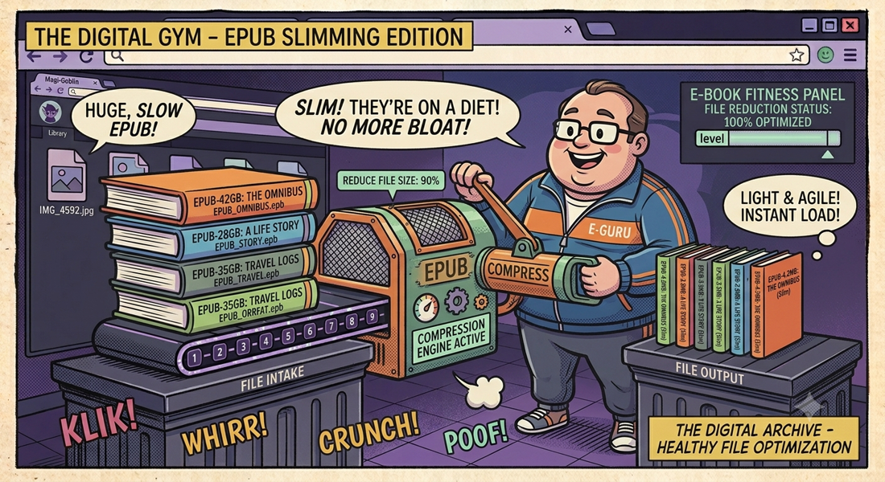

← Torna ai progettiepubslimer
Riduci le dimensioni dei tuoi EPUB comprimendo le immagini con elaborazione parallela via Canvas API. Slider qualità/peso, due modalità operative — tutto in un singolo file HTML.
📖 Cos'è
epubslimerè un compressore di immagini per EPUB che funziona interamente nel browser, riducendo le dimensioni dei file EPUB del 40-70% senza toccare la struttura del libro. Sfrutta l'API Canvas del browser per ricodificare al volo tutte le immagini (JPG, PNG, WEBP) contenute nell'EPUB, con elaborazione parallela su 4 thread simultanei. L'interfaccia offre uno slider qualità/peso dal 10% (massima compressione) all'80% (massima qualità), anteprima del risparmio in KB prima/dopo, e due modalità: singolo EPUB e batch (fino a 10 EPUB in coda).
👤 A chi serve
epubslimer è pensato per chiunque abbia EPUB troppo pesanti e voglia ridurne le dimensioni senza perdere qualità percepibile. Lettori con dispositivi e-reader dalla memoria limitata (Kindle, Kobo) che vogliono far entrare più libri. Collezionisti di ebook con librerie di centinaia di titoli che occupano troppo spazio su disco. Editori e autori self-published che devono ottimizzare EPUB prima della distribuzione, riducendo i costi di bandwidth. Chi crea EPUB da scannerizzazioni o PDF e si ritrova con immagini ad alta risoluzione sproporzionate rispetto al testo — epubslimer le ottimizza senza toccare il contenuto.
⚙️ Come funziona
Il processo sfrutta tre tecnologie browser. JSZip apre l'EPUB come archivio ZIP in memoria, ne analizza la struttura e identifica tutti i file immagine (.jpg, .jpeg, .png, .webp). Canvas API ridisegna ogni immagine su un elemento canvas off-screen e la riesporta come JPEG o PNG con la qualità scelta dallo slider (10% = compressione massima, 80% = qualità massima, default 60%). Promise.all con chunkingelabora 4 immagini in parallelo per massimizzare la velocità, riducendo i tempi del 70% rispetto all'elaborazione sequenziale.
📋 Due Versioni
| Caratteristica | Unified App 🏆 | Fast Standalone | Batch Standalone |
|---|---|---|---|
| Accesso | noesis-epub-tools.vercel.app | epubslimer.html | multiepubslimer.html |
| Installazione | Nessuna (via browser) | Scarica e apri | Scarica e apri |
| Stack | React 19 + TS + Vite | React 19 ESM + Tailwind CDN | |
| Modalità | Single + Batch + Splitter | Singolo EPUB | Fino a 10 EPUB |
| Compressione | Canvas API ×4 parallela, DEFLATE level 1 | ||
🎛️ Fast Edition (Singolo EPUB)
- Drag & Drop — Trascina un EPUB o clicca per selezionarlo
- Slider qualità/peso — Da 10% (massima compressione) a 80% (massima qualità). Predefinito: 60%
- Progresso in tempo reale — Barra percentuale con conteggio immagini processate
- Riepilogo dettagliato — Confronto prima/dopo con percentuale di riduzione
- Download — Scarica il file compresso come
nome_slim.epub
📦 Batch Edition (Multi-EPUB)
- Coda fino a 10 EPUB — Aggiungi più file, visualizza lo stato di ciascuno (pending/processing/done/error)
- Elaborazione sequenziale — Un EPUB alla volta per risparmiare RAM, ma 4 immagini in parallelo all'interno di ciascuno
- Download automatico — Ogni EPUB viene scaricato appena completato, senza attese
- Gestione coda — Rimuovi file prima dell'elaborazione, "Pulisci coda" al termine
🏗️ Come Funziona
- L'EPUB viene aperto con JSZip come container ZIP in memoria
- Tutti i file
.jpg,.jpeg,.png,.webpvengono identificati - Ogni immagine viene ridisegnata su un Canvas HTML e riesportata con la qualità scelta (JPEG/PNG)
- 4 immagini vengono compresse in parallelo (chunking con
Promise.all) - Il container ZIP viene rigenerato con DEFLATE level 1 (massima velocità)
🔒 Privacy
100% client-side. Il file EPUB non lascia mai il tuo computer — viene aperto, processato e risalvato interamente nella memoria del browser. Nessun server, nessun upload, nessuna API esterna per la compressione. Puoi usarlo offline dopo il primo caricamento.
📦 Versione Standalone (Single-File HTML)
Oltre all'app Vercel, epubslimer è disponibile anche come file HTML monolitico — zero build step,
apribile direttamente nel browser. React e JSZip sono importati via
ESM import maps da CDN, Tailwind via script tag, Lucide Icons da ESM.
Nessun bundler, nessun node_modules, nessun build step — apri il file e funziona.
<!DOCTYPE html>
<html>
<script type="importmap">
{ "imports": {
"react": "esm.sh/react@19.0.0",
"jszip": "esm.sh/jszip@3.10.1",
"lucide-react": "esm.sh/lucide-react@0.454.0"
}}
</script>
<script type="module">
// App React completa inline (~250 righe)
// Canvas API per compressione immagini (concorrenza ×4)
// JSZip per manipolazione container EPUB
</script>
</html>